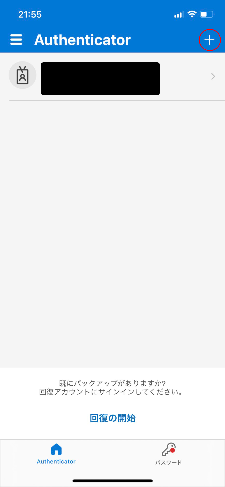
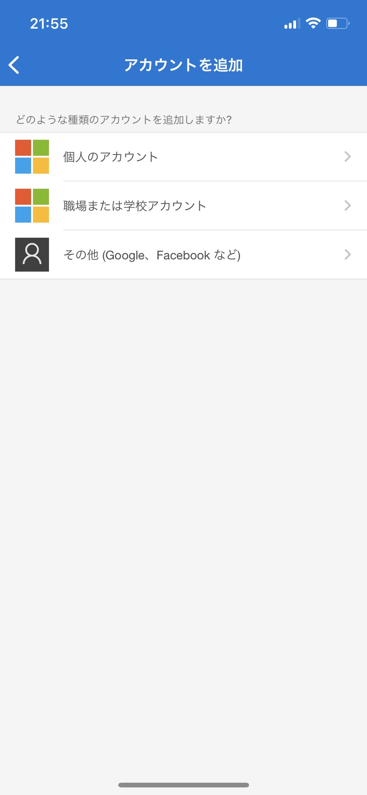
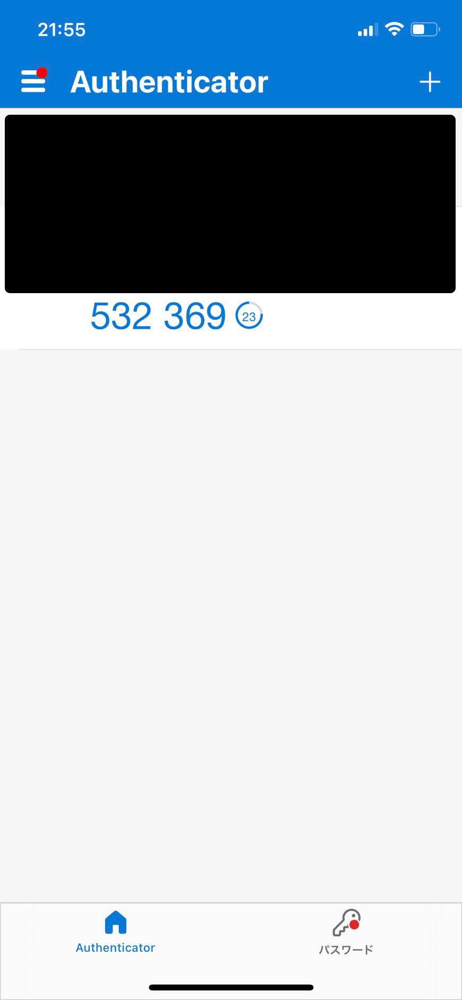

Auto Auth hg
developed by hageron
使い方
①．二段階認証に使用する秘密鍵を入手する。
1.大学のパスワード変更ページにアクセスし、ログインする。（
https://axiole.cc.uec.ac.jp/
)
2.現在設定している方法で、二段階認証をする。
3.「２段階認証設定」を選択する。
4.「トークンアプリを使用する」を選択し
URIの、otpauth://totp/axiole:{{学籍番号}}?secret={{秘密鍵}}&issuer=axioleの「秘密鍵」の部分をメモしておく。
②.バックアップ用の端末を登録する。
必須
1.TOTPを生成してくれるアプリケーションをインストールする。
ここではMicrosoft Authenticator(
App Store
)を例に説明していく。
 2.「その他(Google, Facebookなど)」を選択する。
 3.①.4で表示されたQRコードを読みこむと、以下の画面に遷移する。
※6桁の数字が二段階認証のパスワードである。
※以下で紹介するAuto Auth hgを使ってログインできなくなった際に代わりに用いる。

③.Auto Auth hgの設定をする。
1.環境変数に「UEC_2FACTOR_PRIVATEKEY」という変数名で、①.4で入手した秘密鍵を設定する。
※やり方が分からない場合
2.これでつかえるようになります。
使い方
Auto Auth hg.exeを実行するとカーソルがある所にワンタイムパスワードを入力するので、テキストボックスに合わせてから実行してください。このソフトにショートカットを設定するとめちゃ楽です。
https://nikunimame.com/windows-exe-shortcut/
 2.現在設定している方法で、二段階認証をする。
2.現在設定している方法で、二段階認証をする。 3.「２段階認証設定」を選択する。
3.「２段階認証設定」を選択する。 4.「トークンアプリを使用する」を選択し
4.「トークンアプリを使用する」を選択し 2.現在設定している方法で、二段階認証をする。
3.「２段階認証設定」を選択する。
4.「トークンアプリを使用する」を選択し
2.現在設定している方法で、二段階認証をする。
3.「２段階認証設定」を選択する。
4.「トークンアプリを使用する」を選択し